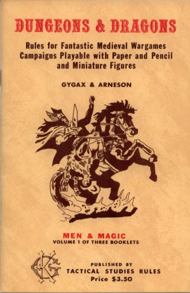
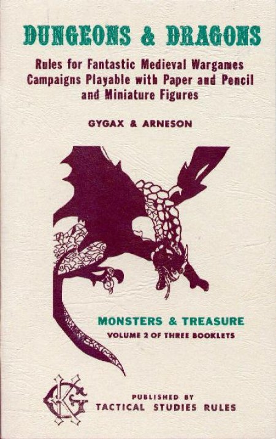
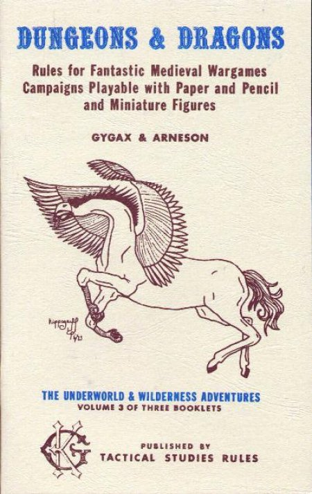
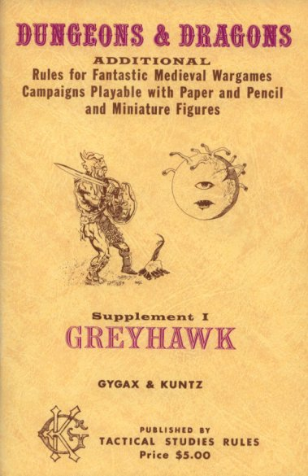
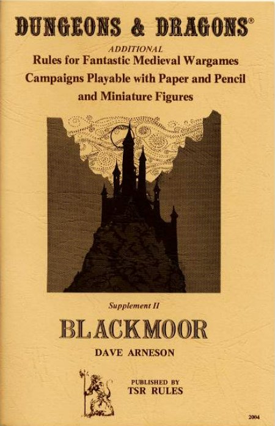
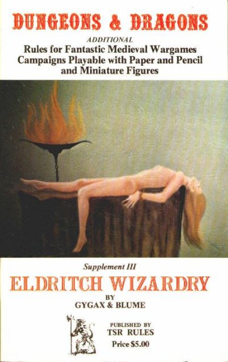
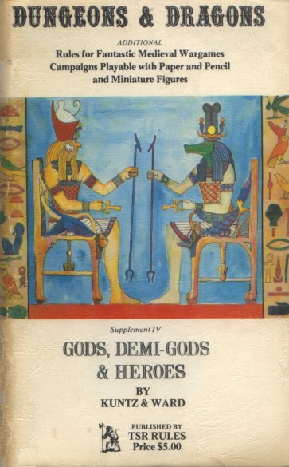
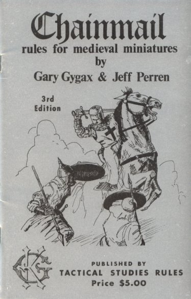
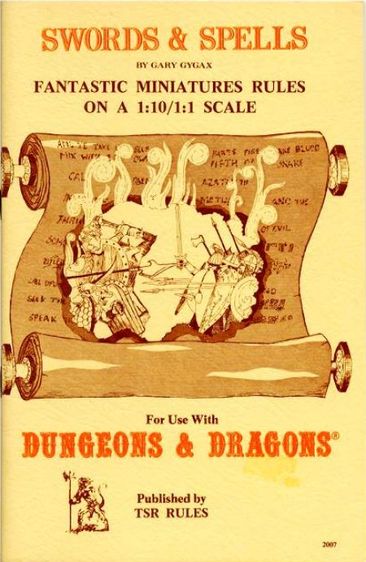

D&D quickly expanded into several useful supplemental booklets before being entirely rewritten into the original Advanced Dungeons and Dragons rules that all subsequent versions derive from. (And to this gamer's mind, the original AD&D rules were the ultimate set of rules for the game—all subsequent versions mainly being ploys to make money off of gamers who had previously believed themselves happy with what they had.)
The original booklets sell for hundreds of dollars on the collector market, and there is just no way Hasbro will re-release the original rules or license any authorized copies.
(Did you notice that? Everything available from this web page is covered by copyright. While I can certainly make reproductions for my own use, I cannot legally (in general) provide them to other people. Therefore the directory they reside in is password protected.)
If you want the password, please send me an email with your real name and a statement to the effect that you currently own the original rules and you would like access to these facsimiles for your personal convenience, or academic or historical interest in the history of role-playing games. Then I'll send you a password.
The facsimiles are rekeyed and saved as searchable PDF files. If you notice a typo or other errata, please drop me a line. Note that I've tried to maintain the original flavor of the books, using simple fonts and formatting. The result is almost, but not quite, a page-by-page reproduction of the rule books. The point is to make the original material available, not to try to reproduce the exact results of 1970's word processing.
|  |  |  |
| Volume 1: Men & Magic | Volume 2: Monsters & Treasure | Volume 3: The Underworld & Wilderness Adventures |
|  |  |  |  |
| Supplement I: Greyhawk | Supplement II: Blackmoor | Supplement III: Eldritch Wizardry | Supplement IV: Gods, Demi-Gods & Heroes |
|  |  |
| Chainmail (part 1) Chainmail (part 2) |
Swords & Spells |